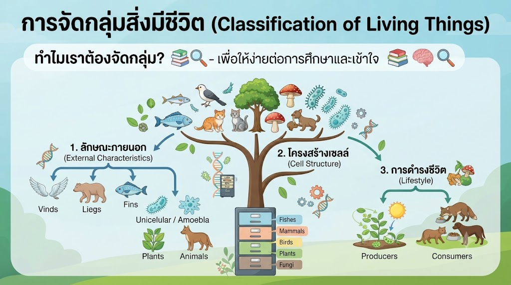
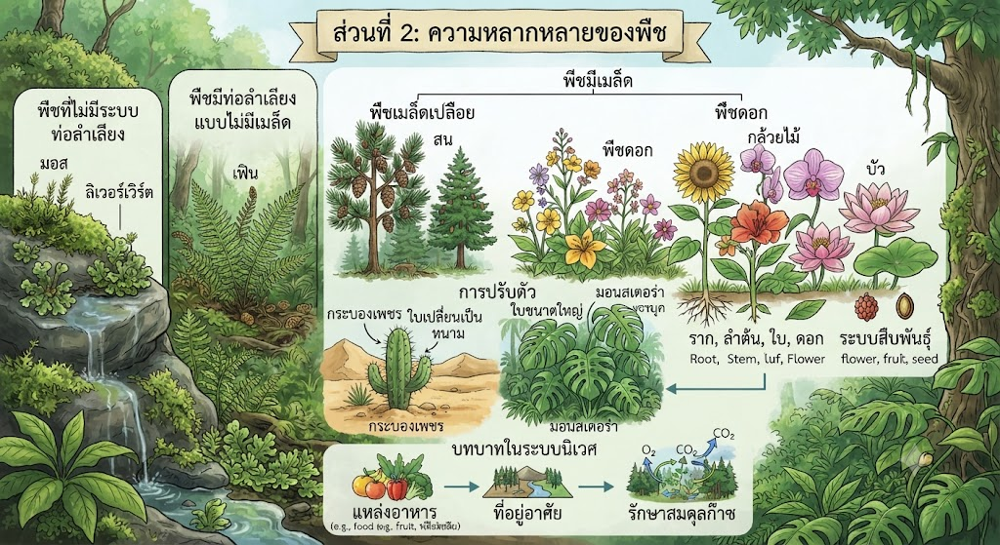

โดย พระจอมเกล้าติวเตอร์
โลกของเราเต็มไปด้วยสิ่งมีชีวิตหลากหลายชนิด เพื่อให้ง่ายต่อการศึกษาและทำความเข้าใจ นักวิทยาศาสตร์จึงจำเป็นต้องมี "การจัดกลุ่ม" สิ่งมีชีวิต โดยอาศัยเกณฑ์การจำแนกที่ชัดเจน การจัดกลุ่มสิ่งมีชีวิตไม่ใช่เพียงการแบ่งตามความรู้สึก แต่เป็นการใช้หลักเกณฑ์ทางกายภาพ พฤติกรรม และพันธุกรรม เพื่อจัดระเบียบสิ่งมีชีวิตให้เป็นหมวดหมู่

หลักเกณฑ์เบื้องต้นที่นักวิทยาศาสตร์นิยมใช้ ได้แก่ การสังเกตลักษณะภายนอก เช่น การมีขา การมีครีบ หรือการมีปีก ต่อมาคือการใช้กล้องจุลทรรศน์จำแนกสิ่งมีชีวิตเซลล์เดียวและหลายเซลล์ รวมถึงการจัดกลุ่มตามการดำรงชีวิต เช่น กลุ่มผู้ผลิตที่สังเคราะห์แสงได้เอง และกลุ่มผู้บริโภคที่ต้องพึ่งพาพลังงานจากสิ่งมีชีวิตอื่น ระบบการจำแนกนี้เปรียบเสมือนห้องสมุดทางธรรมชาติ ที่ทำให้เราสามารถค้นหาข้อมูลและเข้าใจความสัมพันธ์ของสิ่งมีชีวิตแต่ละชนิดได้อย่างแม่นยำ

พืชเปรียบเสมือนโรงงานผลิตพลังงานของโลก ความหลากหลายของพืชนั้นกว้างขวางตั้งแต่พืชชั้นต่ำที่ไม่มีระบบท่อลำเลียง ไปจนถึงพืชดอกที่มีโครงสร้างซับซ้อน พืชแต่ละชนิดมีเอกลักษณ์เฉพาะตัวที่เกิดจากการปรับตัวเข้ากับสภาพแวดล้อม เช่น พืชในพื้นที่แห้งแล้งมักมีใบเปลี่ยนเป็นหนามเพื่อลดการคายน้ำ ในขณะที่พืชในเขตร้อนชื้นมีใบขนาดใหญ่เพื่อรับแสง
ในการศึกษาความหลากหลายของพืช เราจำแนกตามเกณฑ์การสืบพันธุ์และการมีท่อลำเลียง พืชมีดอก (Angiosperms) ถือเป็นกลุ่มที่ประสบความสำเร็จสูงสุดบนโลกเนื่องจากระบบการสืบพันธุ์ที่มีประสิทธิภาพ การศึกษาความแตกต่างของราก ลำต้น ใบ และดอก ช่วยให้เราเข้าใจบทบาทของพืชในระบบนิเวศ ไม่ว่าจะเป็นแหล่งอาหาร ที่อยู่อาศัย หรือการรักษาสมดุลของก๊าซในบรรยากาศ
สัตว์เป็นสิ่งมีชีวิตที่มีความหลากหลายทางสรีรวิทยาและพฤติกรรมสูงที่สุด เราแบ่งสัตว์ออกเป็นสองกลุ่มใหญ่คือ สัตว์มีกระดูกสันหลังและสัตว์ไม่มีกระดูกสันหลัง ความหลากหลายนี้สะท้อนให้เห็นถึงการปรับตัวเพื่อการอยู่รอดในที่อยู่อาศัยต่าง ๆ เช่น สัตว์ในทะเล สัตว์ในป่าดิบชื้น หรือสัตว์ในพื้นที่สูง
การศึกษาเรื่องสัตว์ประกอบด้วยการดูลักษณะภายนอก ซึ่งเป็นผลผลิตจากการปรับตัวตลอดระยะเวลาวิวัฒนาการ สัตว์แต่ละชนิดมีการดำรงชีวิตที่แตกต่างกัน ทั้งการกิน การสืบพันธุ์ และการป้องกันตัวจากศัตรู การเรียนรู้เรื่องนี้ช่วยให้เราเห็นถึงคุณค่าของชีวิตทุกรูปแบบและความเชื่อมโยงระหว่างสัตว์และสิ่งแวดล้อม
การเรียนรู้เรื่องความหลากหลายของสิ่งมีชีวิต เป็นก้าวแรกของการเป็นนักวิทยาศาสตร์รุ่นเยาว์ การที่เรารู้จักจำแนกพืชและสัตว์รอบตัว ช่วยให้เรามองเห็นโลกในมุมมองที่ลึกซึ้งยิ่งขึ้น ว่าทุกชีวิตบนโลกมีความสำคัญและพึ่งพาอาศัยกันในระบบนิเวศอย่างแยกไม่ได้
— บันทึกโดย CHINPONG SMART FARM